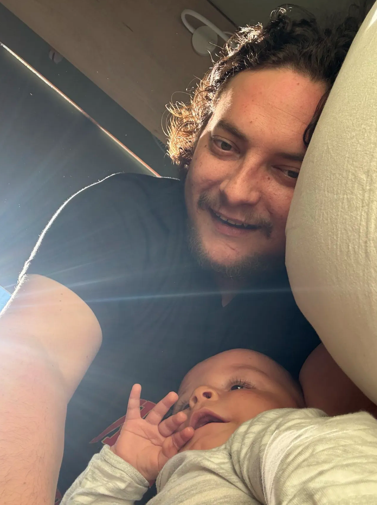

Laurie Scheepers
Scientist · Engineer · Philosopher · Systems Thinker

I work in AGI research and development -- on the side.
My day job is serving as the technical director at ENTER Konsult, our lean advanced tech firm. We transform industries that modern software has underserved, building long-term relationships to guide organisations through this revolutionary era. We make technology work FOR people -- not against the humans who make any organisation what it actually is. We also develop private, bespoke software for select people and organisations.
Our ethos:
- We will not build what should not exist
- We transform complexity -- KISS is paramount
- We enforce strict quality control
- We do what is RIGHT
- We extend our thinking -- never outsource it
I am a scientist, engineer, philosopher, and systems thinker. That last one is a polite way of saying I see patterns connecting things that are almost certainly unrelated, and I won't stop talking about it.
I've been fascinated by nature's inner workings since before I had the vocabulary to describe them. I still am. Nature is a better engineer than any of us. She just refuses to document anything.
When I'm not in front of a computer, I'm reading, writing in my journal, producing music, or co-designing games with my eldest son -- the actual game designer in the family. I provide the infrastructure. And opinions nobody asked for.
Ahhh, there's always too many things and not enough hours.
But none of that comes first.
I am a dad and a devoted husband. The everyday moments with my wife and two boys -- big or small -- are what I live for. I capture them in my admittedly absurd memory. Doctors told me as a child that my head is too big. I have chosen not to interpret this. 🤣
How I see things.
I build things. I can also destroy what I build. That is not a threat -- it's a definition of ownership. If something I create doesn't meet the standard, I would rather take it apart myself than watch it become someone else's compromise.
I don't try to prove things. I try to break them. What survives my best attempt to disprove it is the only thing worth keeping. This applies to software, to ideas, to strategies, and -- on good days -- to my own opinions, which I hold strongly, change willingly, and will abandon in front of you without embarrassment if you bring a better argument.
I believe life is not a zero-sum game. This is not optimism -- it is an engineering observation. The most enduring systems I have studied are cooperative ones. Competition and cooperation are not opposites; they are the same force expressed at different scales. Nature arrived at this conclusion long before we started writing papers about it.
I believe critical thinking is the most important and most neglected skill in any room. Not cynicism -- the genuine kind. The kind that starts with questioning your own assumptions before you touch anyone else's.
I believe respect costs nothing and compounds infinitely.
I believe individualism and community are not in tension. You cannot build a strong collective from people who haven't figured out who they are. And you cannot figure out who you are in complete isolation. That tension is not a problem to be solved. It is the engine that drives everything worth building.
I am a teacher. But I vastly prefer being a learner. In my experience, the best teachers always do.
Respect. Individualism. Sense of Community. Critical Thinking.
These are the principles that shape me. Or perhaps they shaped me long ago and I am only now finding the right words for them.
I am a gentle soul. I mention this because people who hold strong convictions are often assumed to be aggressive. I hold very strong convictions. I am not aggressive. These things coexist more easily than people expect.
I'm based in Cape Town, South Africa 🇿🇦 -- the city with the best weather in the world. This is not opinion. This is data. Come visit and argue with me about it over coffee.
You can contact me anytime on the Discord channel.
Kind regards,
V>>